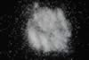

|
|
(For further information on spectroscopy, see:
http://speclab.cr.usgs.gov)
TITLE: Analcime GDS1 Zeolite DESCRIPT
DOCUMENTATION_FORMAT: MINERAL
SAMPLE_ID: GDS1
MINERAL_TYPE: Tectosilicate
MINERAL: Analcime (Zeolite group)
FORMULA: NaAlSi2O6*H2O
FORMULA_HTML: NaAlSi2O6•H2O
COLLECTION_LOCALITY: Mount Saint Hilaire, Quebec
ORIGINAL_DONOR: Wards Scientific
CURRENT_SAMPLE_LOCATION: USGS Denver Spectroscopy Laboratory
ULTIMATE_SAMPLE_LOCATION: USGS Denver Spectroscopy Laboratory
SAMPLE_DESCRIPTION:
The original sample description and vis-NIR spectrum was published in:
Clark, R.N., T.V.V. King, M. Klejwa, G. Swayze, and N. Vergo, 1990, High spectral resolution reflectance spectroscopy of minerals: J. Geophys Res., v.95, 12653-12680.
The sample appears to be mineralogically and spectrally pure.
IMAGE_OF_SAMPLE:

END_SAMPLE_DESCRIPTION.
XRD_ANALYSIS:
pure Analcime - by Norma Vergo
END_XRD_ANALYSIS.
COMPOSITIONAL_ANALYSIS_TYPE: None # XRF, EM(WDS), ICP(Trace), WChem
COMPOSITION_TRACE: None
COMPOSITION_DISCUSSION:
None
END_COMPOSITION_DISCUSSION.
MICROSCOPIC_EXAMINATION:
avg. grain size = 120µm
Smaller analcime grains adhere to larger grains. Uneven fracture, lacks good cleavage, clear grains, twinning, isotropic , anomalously biaxial in some cases, all characteristic of analcime. G. Swayze
END_MICROSCOPIC_EXAMINATION.
SPECTROSCOPIC_DISCUSSION:
END_SPECTROSCOPIC_DISCUSSION.
SPECTRAL_PURITY: 1a2a3a4a # 1= 0.2-3, 2= 1.5-6, 3= 6-25, 4= 20-150 microns
| LIB_SPECTRA_HED: | where | Wave Range | Av_Rs_Pwr | Comment |
|---|---|---|---|---|
| LIB_SPECTRA: | splib04a r 333 | 0.2-3.0µm | 200 | g.s.= |
| LIB_SPECTRA: | splib05a r 936 | 0.2-3.0µm | 200 | g.s.= |
| LIB_SPECTRA: | splib06a r 1930 | g.s.= | ||
| LIB_SPECTRA: | splib06a r 1942 | g.s.= |
{kind=link}